2D Inverted Pendulum
For our fifth year (September 2025 - April 2026) engineering capstone our main goal is to design and build, in a team of four, a 2D inverted pendulum system. The inverted pendulum is a classic problem in dynamics and control theory, where the goal is to balance a pendulum in an upright position by applying forces at its base. My focus has been developing the control system of the pendulum in order to stabilize and balance the pendulum properly.
Mini Maglev
For our fourth year (September 2024 - April 2025) engineering capstone our main goal was to design, in a team of four, a miniaturized maglev train. A maglev train is a train that uses magnetic levitation to move without touching the track, and moves at high speeds with minimal friction. The train is powered by a linear induction motor.
The reason I was attracted to this project is because it contains a combination of physics (electromagnetism, which has always been one of the topics that has been most interesting to me) and control systems (for stabilizing and controlling the speed of the train).
Below is our official Capstone Proposal:
PCB Design Project
Using KiCad, I designed a signal-generator chip that utilizes a 15V DC signal that passes through a voltage regulator to produce 5V DC. This 5V is then converted to -5V to power the rails of an op-amp, enabling control of the output signal amplitude. The 5V also powers a 100 kHz timer/oscillator, producing a square wave signal that can be tuned in combination with potentiometers and the op-amp. The tuned signal can be read from a through-hole test port.
If we want to design such a PCB, we need to first create a schematic file of the form “schematicname.kicad_sch” where we design and properly label the schematics for the circuit. Sometimes it is necessary to manually create your own components if the component is not available in the library.
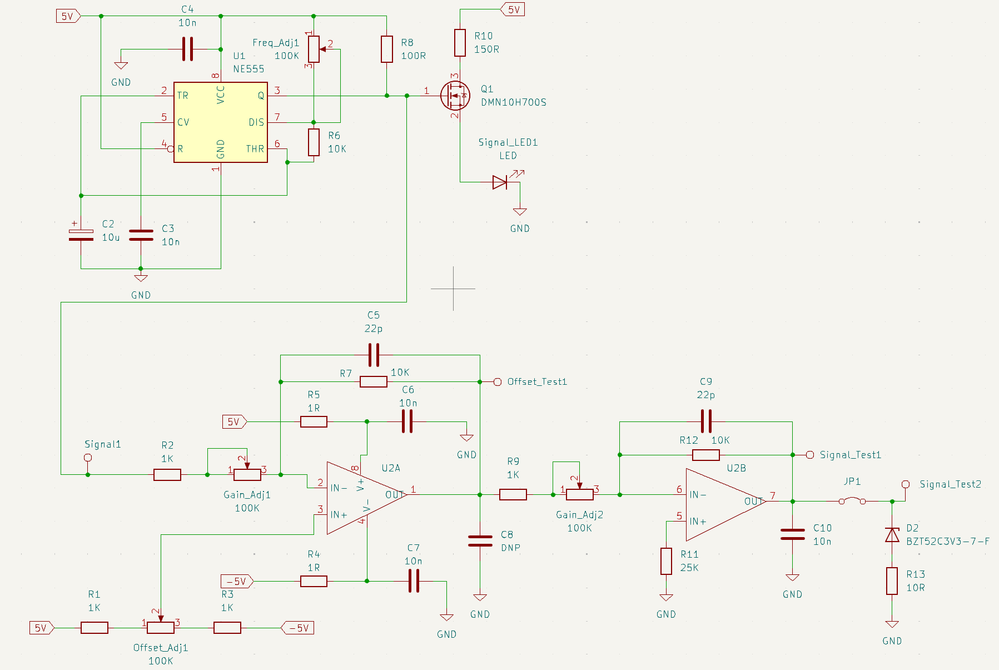
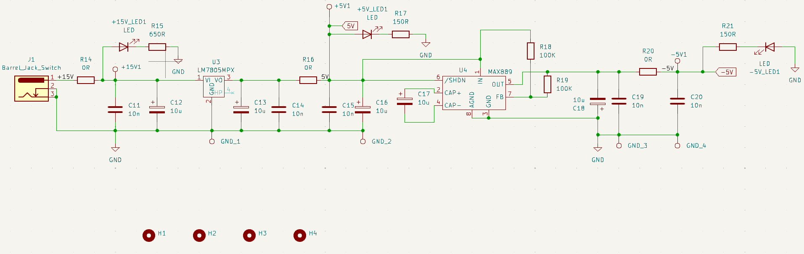
We now have finished designing our schematic. But how do we go from a schematic to the actual physical layout of the circuit? The answer is using footprints. In KiCad, the physical layout of a component as it will be placed on the printed circuit board (PCB) is called its footprint. This means that we have to apply the appropriate footprint for each component. For example, the footprint for a 10 nF capacitor is shown below:
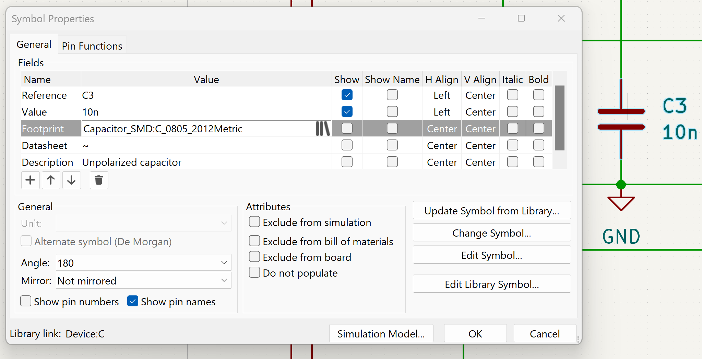
Using our completed schematic with the relevant footprints, we can now create a PCB file of the form “pcbname.kicad_sch” and import our schematic. An example of the skeleton setup of our circuit is shown below:
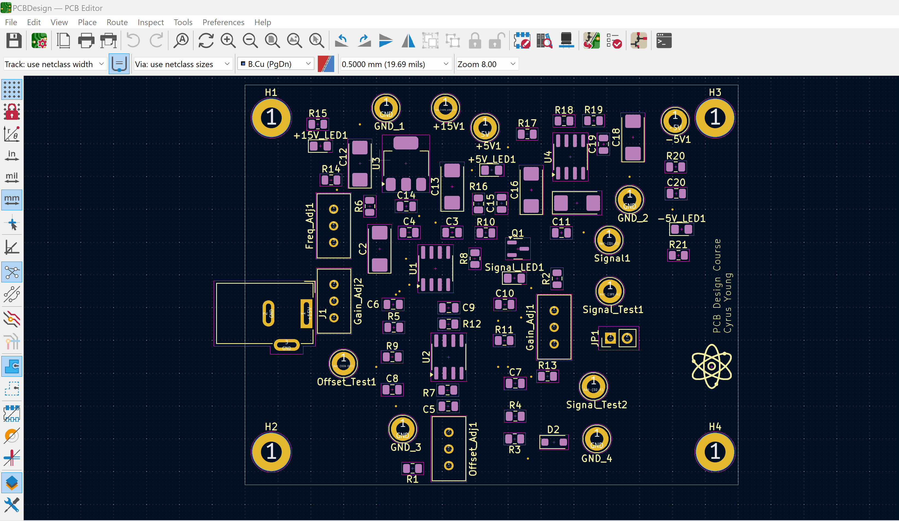
The next step is to actually connect the components. Remember in the beginning where I showed two separate schematics? This means that we have to make two separate connection layers, both utilizing copper for the connections. Once we have properly connected all our components, we can generate the relevant gerber files. The gerber files will be used to eventually manufacture our circuit. A picture of both the final PCB design as well as the circuit itself are shown below:
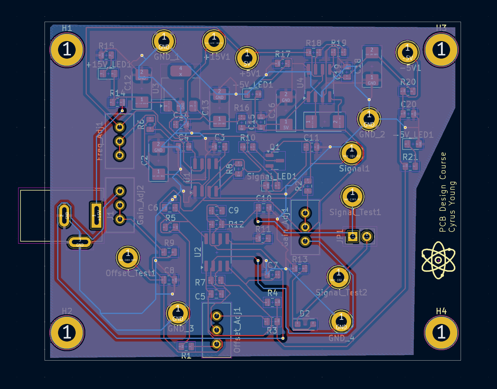
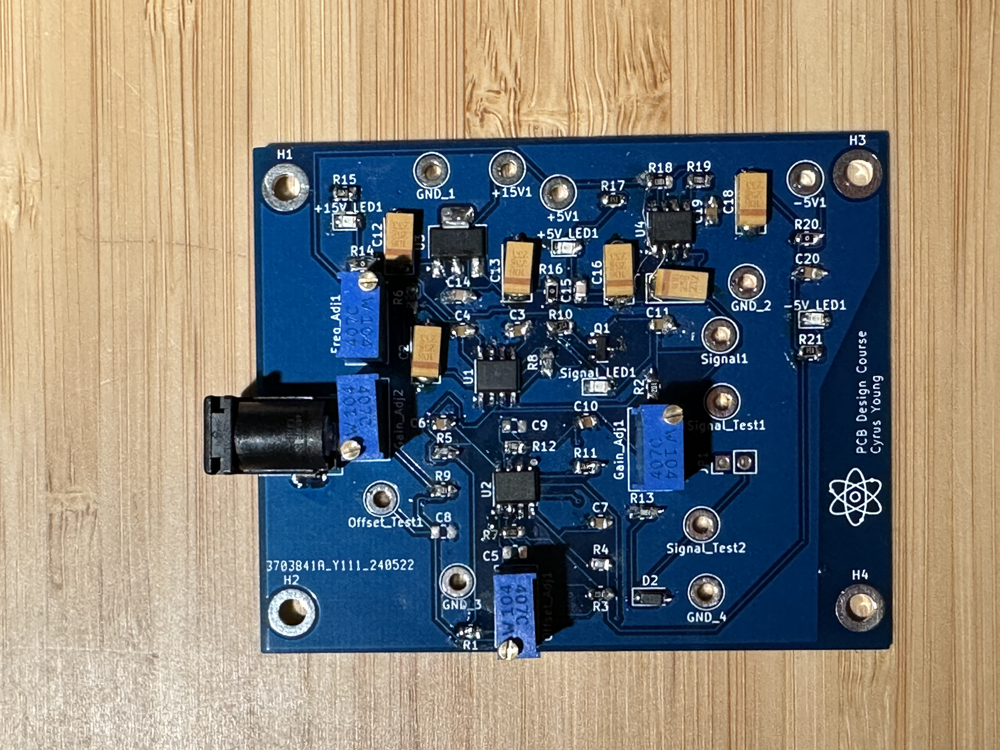
Fizz Detective
This project focuses on developing a robot in a simulated environment for a project course called ENPH 353. The purpose of the competition is to design a virtual robot that drives around a track (which consists of, among other things, winding roads, a hill with sharp turns, and a rapidly moving model of Baby Yoda) while simultaneously reading signs, character by character, and storing the word of each sign to eventually display them in the form of a short story. In order to navigate the course, we applied a filter to the camera of the robot and then utilized a PID controller based on the output of the filter. In order to read the signs, we used a convolutional neural network.
For this project, three other students and I developed a robot for a competition based on the video game Mario Kart. The competition was as follows; For a set period of time, two robots would race around a track and have the option to pick up blocks. Three points would be awarded for each lap completed and one point for each block that was picked up and the robot with the most points at the end would be the winner of the round. There were also magnetic "bombs" in the shape of cubes around the track. A diagram of the track as well as the path our robot took is shown below:
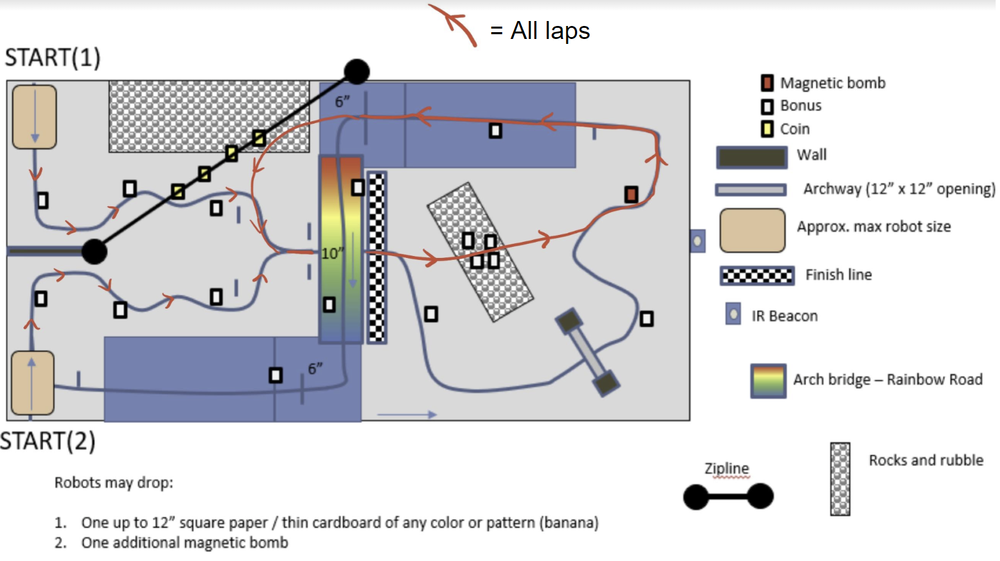
Our robot included may features such as a tape tracker, a beacon detector, an H-bridge, an opto-isolated servo, a power system as well as regulators, and IMU, and a hall effect sensor.
1) The tape tracker utilized infrared reflectance sensors to detect the tape on the track by measuring the amount of light reflected back to the sensor (the track was white and the tape was black). This light signal was then converted to a voltage signal. The voltage signal was then fed into a PID controller which would then be used to steer the robot.
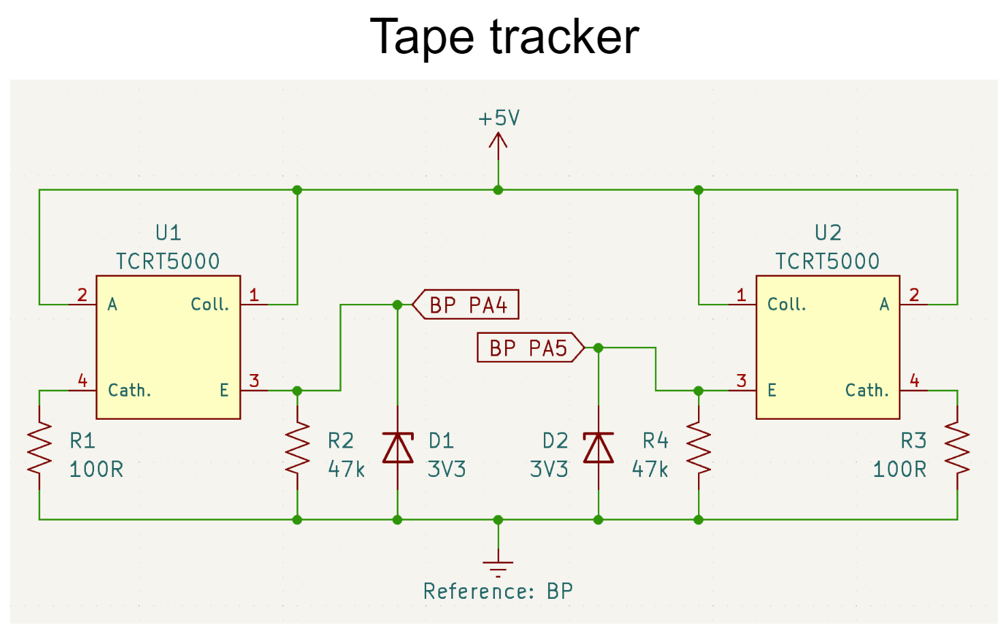
2) The beacon detector utilized a phototransistor to detect the IR signal from the beacon. The beacon emitted an IR signal that was modulated at 1 kHz. The phototransistor would then detect the intensity of the IR signal and convert it to a voltage signal. Along with the relative orientation of the beacon detector, the closer the beacon detector was to the beacon, the higher the voltage signal. Once the voltage signal was high enough, the robot would then turn towards the beacon and go straight torwards it until the voltage signal reached a limit. By that point, the robot switched to the tape tracker to follow the track.
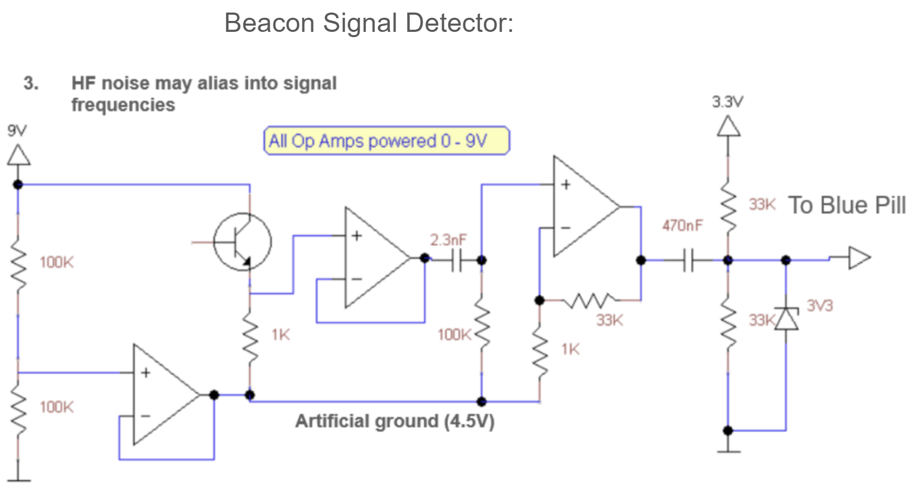
3) The H-bridge, which was controlled by a PWM signal, was used to control the speed of the motor as well as the polarity (polarity changes allow changes in the motors rotation direction). The H-bridge was especially useful for making sharp turns as sudden changes in the motor's rotation direction and speed were necessary.
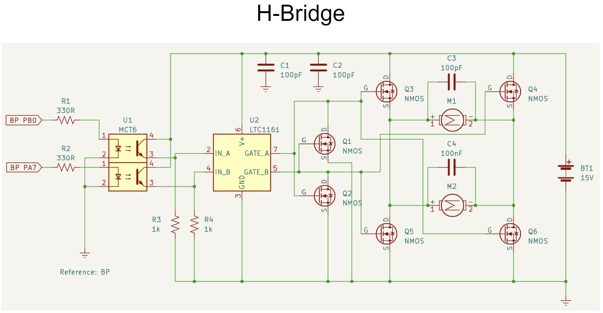
4) The opto-isolated servo was used to control the steering of the robot. The servo was controlled by a PWM signal which would then be used to control the angle of the servo. The servo was opto-isolated to prevent any electrical noise from the motor from affecting the servo.
5) The power system consisted of several 15V batteries that were used to power the robot. The regulators were used to convert the 15V signals to signals of lower voltage (such as 5V and 3.3V) that were used to power the various components of the robot.
6) The IMU was used to detect the orientation of the robot with respected to the ground. Specifically, our robot had to jump off an edge and land in a pile of rocks and then turn around and drive torwards the IR beacon. The IMU was specifically used the detect the change in angle of the robot as it turned around to make sure it did not overshoot. Another use of the IMU was to change the angle of the robot 90 degrees to the left or right depending on the starting orientation of the robots, as all robots started facing 90 degrees from the IR beacon and we needed ours to face the beacon before it started to drive torwards it.
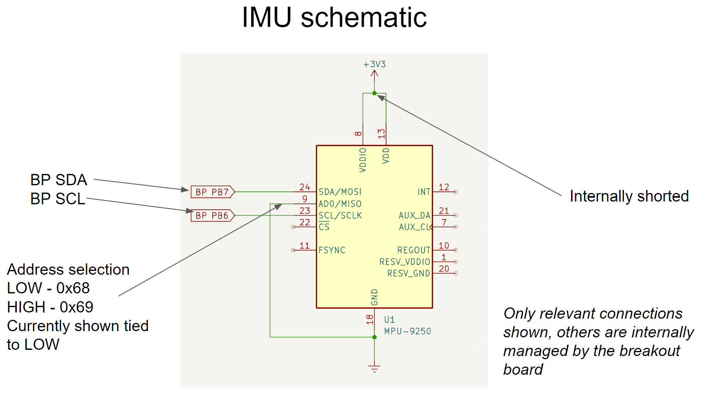
7) The hall effect sensor was used to detect the magnetic "bombs" on the track. The hall effect sensor would detect the magnetic field of the bomb and then send a signal to the robot to temporarily slow down and casually push the magnetic bombs to the side (teams were only penalized if the magnetic bombs flipped on their side). However, due to our foam barrier at the front of our robot, we were able to push the bombs to the side without them flipping over without needing to reduce our speed.
A picture of the final robot is shown below:
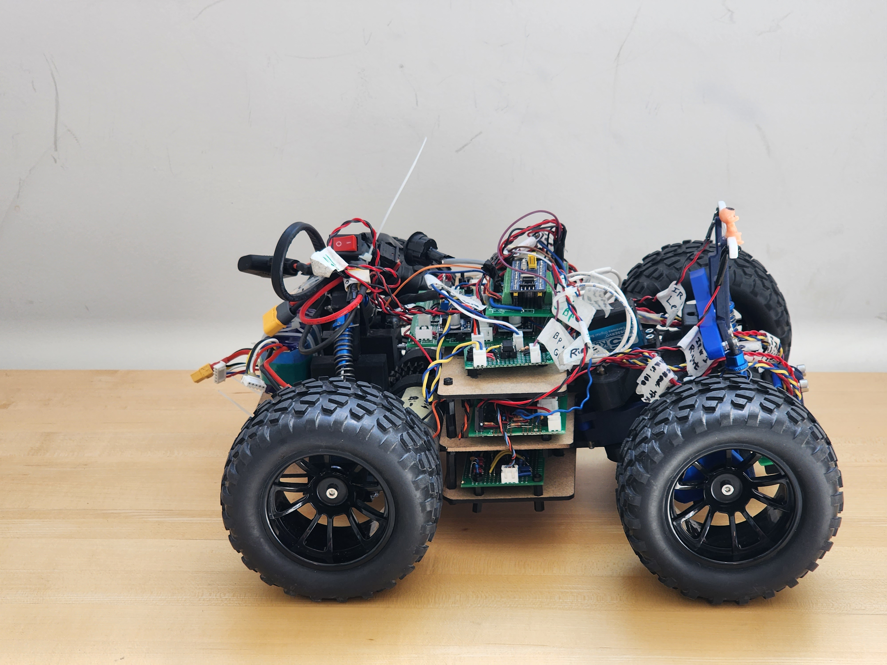
From the summer of 2021 to February of 2024, I was part of UBC Orbit, a student design team at UBC dedicated to designing and developing satellites. Specifically, I worked on a project called ALEASAT, a collaboration with SFU (Simon Fraser University) and UBC Orbit to develop a 1U CubeSat (a small satellite that is 10 cm x 10 cm x 10 cm) that would provide on-demand images of Earth to amateur radio operators. During my time at UBC Orbit, I worked in three different sub-teams; Orbital determination, Command and Data Handling, and Attitude Determination and Control Systems.
(1.A) The first project that I worked on while on the Orbital Determination sub-team was to write a report to the Canadian government in order to prove that our CubeSat would decay back to Earth within 25 years. Using STK (Systems Tool Kit), I simulated the orbit of our CubeSat in a variety of different circumstances taking into account the altitude, weight, dimensions, and drag coefficient of the CubeSat as well as the atmospheric and solar models and orbital propagator of the CubeSat. With another team member who performed the simulations using GMAT (General Mission Analysis Tool), we recorded the results and submitted them to the Canadian government for approval, which we received.
(1.B) After working on the report, I also contributed to the development of a program that would be used to predict the orbit of the satellite using TLE (Two Line Element) data provided by the Canadian government. The final result was a Python program that, when given the altitude, latitude, longitude, and time of two points of a satellite's orbit, used the TLE data of the satellite to predict the position of the satellite sometime in the future within an accuracy of 10 km or below. As long as the TLE was updated every few weeks (two weeks was recommended to be safe), the program did not produce a large error. Prior to the development of the final program, I created several trial programs in MATLAB to test various orbital algorithms in order to find the optimal algorithm. For the final program, I read parts of several Masters theses and often consulted an orbital mechanics textbook for reference (the textbook that I used was Orbital Mechanics for Engineering Students by Howard D. Curtis) where I learned about fascinating concepts such as Gibbs' method and Lambert's theorem (both in Ch.5).
(2) After working in the orbital determination team, I briefly switched to the Command and Data Handling sub-team. I contributed to the development of a program used to monitor the vitals of the satellite. This program would be used to check the temperature and battery levels of the satellite and would provide alerts if any of these values were beyond the accepted range.
(3) The final team that I worked on was in the Attitude Determination and Control System (ADCS) sub-team, which was my personal favourite due to physics and experimental nature of the work as well as the collaboration involved. The first task that I worked on was contributing to the development, building, and testing of a Helmholtz cage for our satellite. For reference, a Helmholtz coil is a pair of electromagnets on the same axis each with identical currents (same magnitude and direction) separated by a distance of \(R\) where \(R\) is the radius of the coil. A Helmholtz cage is a device that utilizes three pairs of Helmholtz coils to generate a magnetic field that is uniform in the center of the cage. This magnetic field is used to simulate the Earth's magnetic field in order to test the magnetorquers, devices which are used to control the orientation of the CubeSat.